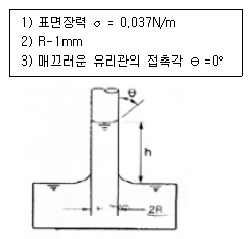
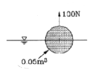
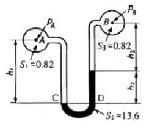
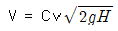
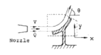
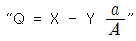

소방설비기사(기계분야) (2007-03-04 기출문제)
1과목: 소방원론
1. 다음 중 내화구조에 해당하는 것은?
- 두께 1.2㎝ 이상의 석고판 위에 석면 시멘트판을 붙인 것
- 철근콘크리트조의 벽으로서 두께가 10㎝ 이상인 것
- 철망 모르타르로서 그 바름 두께가 2㎝ 이상인 것
- 심벽에 흙으로 맞벽치기 한 것
(정답률: 48%)

2. 다음 중 불연재료가 아닌 것은?
- 기와
- 아크릴
- 유리
- 콘크리트
(정답률: 48%)
3. 암모니아에 대한 설명 중 옳지 않은 것은?
- 독성을 가지고 있다.
- 분자량은 17 이다.
- 분자식은 NH4 이다.
- 자극성의 냄새가 난다.
(정답률: 43%)
4. 일반적인 자연발화를 방지하기 위한 조치로 옳지 않은 것은?
- 저장실의 주위온도를 낮게 유지할 것
- 저장실의 습도를 높게 유지할 것
- 수납시 열의 축적을 방지할 것
- 저장실의 통풍을 양호하게 유지할 것
(정답률: 62%)
5. 플래시 오버(flash over)를 옳게 설명한 것은?
- 도시가스의 폭발적 연소를 말한다.
- 휘발유 등 가연성 액체가 넓게 흘러서 발화한 상태를 말한다.
- 옥내 화재가 서서히 진행하여 열 및 가연성 기체가 축적되었다가 일시에 연소하여 화염이 크게 발성하는 상태를 말한다.
- 화재층의 불이 상부층으로 올라가는 현상을 말한다.
(정답률: 58%)
6. 화재의 경우 불은 불연성 가스를 그 연소물에 덮으면 그로 인하여 산소가 희석 또는 차단되면서 소화된다. 이 때에 소화효과만을 고려하였을 경우 사용될 수 있는 기체가 아닌 것은?
- 탄산가스
- 아세틸렌
- 사염화탄소
- Halon 1301
(정답률: 56%)
7. CO2 가스의 증기 비중은 약 얼마인가? (단, 분자량은 CO2 : 44, N2 : 2B, O2 : 32 이다.)
- 0.8
- 1.5
- 2.0
- 2.5
(정답률: 53%)
8. 기체나 액체, 고체에서 나오는 분해가스의 농도를 엷게하여 소화하는 방법은?
- 냉각소화
- 제거소화
- 부촉매소화
- 희석소화
(정답률: 64%)
9. 다음 중 가연성 가스가 아닌 것은?
- 일산화탄소
- 프로판
- 수소
- 아르곤
(정답률: 49%)
10. 가연성 증기를 발생하는 액체가 공기와 혼합하여 기상부에 다른 불꽃이 닿았을 때 연소가 일어나는 최저의 액체 온도를 무엇이라고 하는가?
- 발화점
- 인화점
- 연소점
- 착화점
(정답률: 46%)
11. 교차배관에서 공급되는 소화수를 스프링클러헤드까지 공급하는 역할을 하는 것으로서 스프링클러헤드가 설치되어 있는 배관을 무엇이라 하는가?
- 주배관
- 가지배관
- 신축배관
- 수평주형배관
(정답률: 58%)
12. 화재의 분류방법 중 유류화재를 나타내는 것은?
- A급 화재
- B급 화재
- C급 화재
- D급 화재
(정답률: 58%)
13. 백열전구에서 발열하는 것은 무엇 때문인가?
- 아크열
- 유도열
- 저항열
- 정전기열
(정답률: 54%)
14. 화재 발생시 인명을 구조하는 것으로서 직접 활용할 수 없는 것은?
- 무선통신보조설비
- 완강기
- 구조대
- 공기안전매트
(정답률: 64%)
15. 목단, 코크스, 금속분 등의 연소는 주로 어떤 형태의 연소에 해당되는가?
- 증발연소
- 분해연소
- 표면연소
- 자기연소
(정답률: 53%)
16. 다음 중 인화성 물질이 아닌 것은?
- 기계유
- 질소
- 이황화탄소
- 에테르
(정답률: 56%)
17. 다음 각 물질의 저장방법 중 잘못된 것은?
- 황은 정전기가 축적되지 않도록 하여 저장한다.
- 마그네슘은 건조하면 부유하여 분진폭발의 위험이 있으므로 물에 적시어 보관한다.
- 적린은 인화성 물질로부터 격리 저장한다.
- 황화린은 산화재와 혼합되지 않게 저장한다.
(정답률: 56%)
18. 가연물질이 연소가 잘되기 위한 조건 중 옳지 않은 것은?
- 표면적이 넓어야 한다.
- 산소와 친화력이 좋아야 한다.
- 열전도율이 커야 한다.
- 열 축적이 잘되어야 한다.
(정답률: 57%)
19. 다음 중 소화약제로서 물을 사용하는 주된 이유는?
- 질식작용
- 증발장열
- 연소작용
- 제거작용
(정답률: 55%)
20. 대기 중에 산소는 약 몇 % 정도 있는가?
- 10
- 13
- 17
- 21
(정답률: 64%)
2과목: 소방유체역학
21. 펌프의 양수량 0.8m3/min, 관로의 전 손실수두 5 m인 펌프의 중심으로부터 4 m 지하에 있는 물을 25 m의 송출액면에 양수하고자 할 때 펌프의 축동력은 몇 kW인가? (단, 펌프의 효율은 80%이다.)
- 4.09
- 4.74
- 5.56
- 6.95
(정답률: 44%)
22. 풍동에서 유속을 측정하기 위하여 피토 정압관을 사용하였다. 이때 비중이 0.8인 알콜의 높이 차이가 10 ㎝가 되었다. 압력이 101.3 kPa이고, 온도가 20℃일 때 풍동에서 공기의 속도는 몇 m/s 인가? (단, 공기의 기체상수는 287 N·m/kg·K 이다.)
- 26.5
- 28.5
- 29.4
- 36.1
(정답률: 29%)
23. 온도가 80℃인 물에 손을 넣으면 화상을 입을 수 있지만 온도가 80℃인 한증막에서는 화상을 잘 입지 않는다. 그 주된 이유는?
- 물의 열전도율이 수증기보다 작다.
- 사람의 몸이 대부분 물로 되어 있다.
- 물 속에서 열전달계수 값이 더 크다.
- 물 속에서는 땀이 증발하지 않는다.
(정답률: 46%)
24. 마찰계수가 0.032인 내경 65 mm의 배관에 물이 흐르고 있다. 이 배관에 관 부속품인 구형밸브(손실계수 K1=10)와 티(손실계수 K2=1.6)가 결함되어 있을 경우 이 배관의 상당길이는 몇 n 인가?
- 13.56
- 23.56
- 33.56
- 43.56
(정답률: 56%)
25. 레이놀즈 수가 1200인 유체가 매끈한 원관 속을 흐를 때 관 마찰계수는 얼마인가?
- 0.0254
- 0.00128
- 0.0⑤9
- 0.⑤3
(정답률: 52%)
26. 냉동실로부터 300K의 대기로 열을 배출하는 가역 냉동기의 성능계수가 4 이다. 냉동실 온도는?
- 225K
- 240K
- 250K
- 270K
(정답률: 38%)
27. 어느 화공약품공장에서 화재가 발생하여 타다 남은 물질을 수거하여 질량분석한 결과 C:39.9%, H:6.7%, O:53.4% 이었다. 다음 중 이 물질로 추정되는 화학물질의 분자식은?
- C1H4O
- C2H4O2
- C2H6O
- C3H4O2
(정답률: 50%)
28. 다음 그림과 같이 매끄러운 유리관에 물이 채워져 있다면 이론 상승높이 h를 주어진 조건을 참조하여 구하면?

- 0.007 m
- 0.015 m
- 0.07 m
- 0.15 m
(정답률: 41%)
29. 다음 중 캐비테이션 방지책으로 잘못된 것은?
- 펌프의 설치 위치를 수원보다 낮게 한다.
- 양흡입 펌프를 사용한다.
- 펌프의 마찰손실을 작게 한다.
- 펌프의 회전수를 크게 한다.
(정답률: 67%)
30. 지름이 40 ㎝ 수평 원관 속을 유체가 유속 8 m/s로 100m 거리를 층류로 유동하였을 때 압력손실은 몇 kPa인가? (단, 유체의 점성계수는 0.1Pa·s이다.)
- 98
- 121
- 159
- 980
(정답률: 37%)
31. 체적 0.⑤ m3인 구 안에 가득 찬 유체가 있다. 이 구를 그림과 같이 물 속에 넣고 수직 방향으로 100 N의 힘을 가해서 들어 주면 구가 물 속에 절반만 잠긴다. 구 안에 있는 유체의 비중량은 몇 N/m3인가? (단, 구의 두께와 무게는 모두 무시할 정도로 작다고 가정한다.)

- 6900
- 7250
- 7580
- 7850
(정답률: 37%)
32. 점성계수가 1.4 × 10-3kg/(m·s)인 유체가 평판 위를 u = 850y - 5 × 10-6y3 m/s의 속도분포로 흐르고 있다. 이 때 벽면에서의 전단응력은 몇 N/m2 인가? (단, y는 벽면으로부터 m 단위로 측정한 수직거리이다.)
- 0.88
- 0.98
- 1.09
- 1.19
(정답률: 39%)
33. 고압식 이산화탄소 저장용기의 충전비는 얼마인가?
- 0.5 이상 0.9 이하
- 1.1 이상 1.4 이하
- 1.5 이상 1.9 이하
- 2.1 이상 2.4 이하
(정답률: 59%)
34. 그림과 같은 액주계에서 h1=380mm, h3=150mm일 때 압력 PA=PB가 되는 h2는 몇 mm 인가? (단, 각각의 비중은 S1 = 0.82, S2 = 13.6, S3 = 0.82 이다.)

- 11.4
- 13.9
- 22.7
- 31.9
(정답률: 45%)
35. 수면의 수직하부 H에 위치한 오리피스에서 유출하는 물의 속도 수두는 어떻게 표시되는가? (단, 속도계수는 Cv 이고, 오리피스에서 나온 직후의 유속은

로 표시된다.)- CvH
- CvH2
- Cv2H
- 2CvH
(정답률: 54%)
36. 다음 중 분자식이 CF2BrCl인 할로겐화합물 소화약제는?
- Halon 1301
- Halon 1211
- Halon 2402
- Halon 2021
(정답률: 61%)
37. 그림과 같이 곡면판이 제트를 받고 있다. 제트속도 V m/s, 유량 Q m3/s, 일도 pkg/m3, 유출방향을 θ라 하면 곡면판이 받는 x 방향 힘을 나타내는 식은?

- pQv2 cosθ
- pQv cosθ
- pQv sinθ
- pQv(1 - cosθ)
(정답률: 38%)
38. 제3종 분말소화약제의 열분해시 생성되는 물질과 관계없는 것은?
- NH3
- HPO3
- H2O
- CO2
(정답률: 36%)
39. 소화전 배관에 물이 9.0 m/s로 흐르고 이때의 압력이 150kPa이었다. 소화전 배관은 기준면으로부터 4 m 위에 있다면, 전 수두는 몇 m 인가?
- 23.4
- 19.4
- 4
- 2.34
(정답률: 36%)
40. 등엔트로피 과정에 해당하는 것은?
- 가역 단열 과정
- 가열 등온 과정
- 비가역 단열 과정
- 비가역 등온 과정
(정답률: 44%)
3과목: 소방관계법규
41. 시공능력평가 방법 중 시공능력평가액의 산정방식으로 알맞은 것은?
- 실적평가액 + 실질자본금평가액 + 개발투자평가액 + 경력평가액 ± 신인도평가액
- 실적평가액 + 자본금평가액 + 기술력평가액 + 경업비율평가액 ± 신인도평가액
- 실적평가액 + 자본금평가액 + 기술력평가액 + 경력평가액 ± 신인도평가액
- 실적평가액 + 실질자본금평가액 + 개발투자평가액 + 경업비율평가액 ± 신인도평가액
(정답률: 44%)
42. 다음 중 불특정다수인이 이용하는 다중이용업소에서 설치하여야 하는 소방시설로 알맞은 것은?
- 스프링클러설비, 공기안전매트, 비상조명등
- 자동확산 소화용구, 공기호흡기, 누전차단기
- 수동식 소화기, 유도등, 비상방송설비
- 단독경보험감지기, 피난기구, 무선통신보조설비
(정답률: 52%)
43. 다음 중 다중이용업에 해당하지 않는 것은?
- 찜질방업
- 수면방업
- 콜라텍업
- 놀이방업
(정답률: 31%)
44. 다음 중 소방시설별 하자보수 보증기간이 올바른 것은?
- 피난기구 : ２년
- 비상방송설비 및 무선통신보조설비 : 3년
- 스프링클러설비 : 2년
- 자동화재탐지설비 : 2년
(정답률: 36%)
45. 다음 중 연면적 3만m2 미만의 건축물의 건축허가 및 사용승인 동의여부 회신기간으로 올바른 것은? (단, 보완기간은 필요하지 않는 경우이다,)(오류 신고가 접수된 문제입니다. 반드시 정답과 해설을 확인하시기 바랍니다.)
- 3일 이내
- 7일 이내
- 10일 이내
- 14일 이내
(정답률: 33%)
46. 다음 중 위험물 유별 성질로서 옳지 않은 것은?
- 제1류 위험물 : 산화성 고체
- 제2류 위험물 : 가연성 고체
- 제4류 위험물 : 인화성 고체
- 제6류 위험물 : 인화성 고체
(정답률: 47%)
47. 다음 중 “피난층”에 대한 설명으로 옳은 것은?
- 건축물의 1층을 말한다.
- 하나의 건축물은 반드시 피난층이 하나이다.
- 곧바로 지상으로 갈 수 있는 출입구가 있는 층을 말한다.
- 직통계단을 통해 직접 피난이 가능한 층을 말한다.
(정답률: 44%)
48. 다음 중 소방기본법에서 사용하는 용어의 정의로 옳지 않은 것은?
- 소방대장이라 함은 소방본부장 또는 소방서장 등 화재 재난·재해 그 밖의 위급한 상황이 발생한 현장에서 소방대를 지휘하는 자를 말한다.
- 관계지역이라 함은 소방대상물이 있는 장소 및 그 이웃지역으로서 화재의 예방 · 경계 · 진압 · 구조 · 구급 등의 활동에 필요한 지역을 말한다.
- 소방대상물이라 함은 건축물, 차량, 향해하는 선박, 선박건조구조물, 산림 그 밖의 공작물 또는 물건을 말한다.
- 소방본부장이라 함은 특별시 · 광역시 또는 도에서 화재의 예방 · 경계 · 진압 · 조사 및 구조 · 구급 등의 업무를 담당하는 부서의 장을 말한다.
(정답률: 55%)
49. 다음 중 관리의 권원이 분리되어 있는 것으로서 공동방화 관리를 하여야 할 특정소방대상물에 속하지 않는 것은?
- 판매시설 및 영업시설 중 도매시장
- 판매시설 및 영업시설 중 소매시장
- 공연장
- 지하가
(정답률: 45%)
50. 화재예방을 위하여 보일러는 벽 · 천장과 최소 몇 m 이상의 거리를 두고 설치하여야 하느가?
- 0.5
- 0.6
- 1
- 1.5
(정답률: 48%)
51. 화재 또는 구조 · 구급이 필요한 상황을 허위로 알린 자에 대한 조치로 옳은 것은?
- 100만원 이하의 벌금
- 100만원 이하의 과태료
- 200만원 이하의 벌금
- 200만원 이하의 과태료
(정답률: 20%)
52. 다음 중 방염대상물품에 해당되지 않는 것은?
- 암막 · 무대막
- 창문이 설치하는 브라인드
- 두께가 2mm 미만인 종이 벽지
- 전시용 합판
(정답률: 47%)
53. 소방시설관리업자가 점검을 하지 아니하거나 점검결과를 거짓으로 보고한 때의 1차 행정처분기준은?
- 등록취소
- 영업정지 3월
- 시정명령
- 영업정지 6월
(정답률: 31%)
54. 성능위주설계를 할 수 있는 자의 자격 · 기술 인력 및 자격에 따른 설계의 범위 등에 관한 사항은 다음 중 어느 것에 따라 정하고 있는가?
- 대통령령
- 행정자치부령
- 소방방재청장 고시
- 시 · 도 조례
(정답률: 42%)
55. 이상기상(異常氣相)의 예보나 특보가 있을 때 화재위험을 알리는 소방신호로 알맞은 것은?
- 비상신호
- 화재위험신호
- 발화신호
- 경계신호
(정답률: 48%)
56. 특수가염물의 저장 및 취급기준으로 옳지 않은 것은? (단, 석탄 · 목탄류는 발전용으로 저장하지 않는 경우임) (문제 오류로 실제 시험에서는 나, 다번으로 정답처리 되었습니다. 여기서는 나번을 누르면 정답 처리 됩니다.)
- 물질별로 구분하여 쌓는다.
- 쌓는 부분의 바닥면적 사이는 최소 1.5m 이상이 되도록 한다.
- 석탄 쌓는 부분의 바닥면적은 50m2 이하로 한다.
- 쌓는 높이는 10m 이하로 한다.
(정답률: 47%)
57. 소방기본법에서 정하고 있는 화재의 예방조치 명령과 관계가 없는 것은?
- 불장난 · 모닥불 · 흡연 및 화기 취급의 금지 또는 제한
- 타고남은 불 또는 화기의 우려가 있는 재의 처리
- 함부로 버려 두거나 그냥 둔 위험물 그 밖에 탈 수 있는 물건을 옮기거나 치우게 하는 등의 조치
- 불이 번지는 것을 막기 위하여 불이 번질 우려가 있는 소방대상물의 사용 제한
(정답률: 42%)
58. 다음 중 위험물과 그 지정수량의 조합으로 옳은 것은?
- 황린 : 20kg
- 염소산염류 : 30kg
- 과염소산 : 200kg
- 알킬리튬 : 100kg
(정답률: 46%)
59. 1급 방화관리대상물의 방화관리자로 선임될 수 있는 대상자로 옳지 않은 것은?
- 소방시설관리사 자격을 가진 자
- 소방공무원으로 3년 이상 근무한 경력이 있는 자
- 산업안전기사 자격을 가진 자로서 2년 이상 방화관리에 관한 실무경력이 있는 자
- 소방설비기사 또는 소방설비산업기사 자격을 가진 자
(정답률: 44%)
60. 특정소방대상물의 자체점검 기술자격자의 범위 중 “행정자치부령이 정하는 기술자격자” 라 함은?
- 방화관리자로 선임된 소방설비산업기사
- 방화관리자로 선임된 소방설비기사
- 방화관리자로 선임된 전기기사
- 방화관리자로 선임된 소방시설관리자 및 소방기술자
(정답률: 56%)
4과목: 소방기계시설의 구조 및 원리
61. 피난사다리의 점검에서 필요하지 않은 것은 어느 것인가?
- 설치 장소에 비상경보 벨이 설치 되어 있는가
- 피난 기구라는 뜻의 표시가 설치되어 있는가
- 설치장소 주변에 장애물이 놓여 있지 않은가
- 설치 장소의 개구부는 쉽게 열릴 수 있는가
(정답률: 69%)
62. 전역방충 방식 고발포용 고정포방출구의 설비기준으로 옳은 것은?
- 당해방호구역의 관포체적 1m3에 대한 1분당 포수용액 방출량은 1L이상으로 할 것
- 고정포포방출구는 바닥면적 600m2마다 1개 이상으로 할 것
- 포방출구는 방호대상물의 최고부분보다 낮은 위치에 설치할 것
- 개구부에 자동폐쇄장치를 설치할 것
(정답률: 50%)
63. 송풍기 등을 사용하여 건축물 내부에 발생한 연기를 배연 구획까지 풍도를 설치하며 강제로 제연하는 방식은?
- 밀폐 제연방식
- 자연 제연방식
- 강제 제연방식
- 스모크 타워 제연방식
(정답률: 73%)
64. 대형 수동식 소화기의 능력단위 기준 및 보행거리 배치 기준이 적절하게 표시된 항목은?
- A급화재 : 10단위 이상, B급화재 : 20단위 이상 보행거리 : 3㎝이내
- A급화재 : 20단위 이상, B급화재 : 20단위 이상 보행거리 : 3㎝이내
- A급화재 : 10단위 이상, B급화재 : 20단위 이상 보행거리 : 4㎝이내
- A급화재 : 20단위 이상, B급화재 : 20단위 이상 보행거리 : 4㎝이내
(정답률: 77%)
65. 연결송수관설비의 설치 목적이 아닌 것은?
- 소화펌프 작동 정지에 대응
- 소화 수원의 고갈에 대응
- 소화펌프의 가동시 송출수량을 보충하기 위해
- 소방차에서의 직접 살수시 도달 높이 및 장애물의 한계극복
(정답률: 42%)
66. 5층 건물에 옥내소화전이 1층에 3개, 2층 이상에 각각 2개씩 총 11가 설치 되었을 경우, 수원의 수량 선출방법으로 옳은 것은?
- 3개 × 2.6m3 = 7.8m3
- 2개 × 2.6m3 = 5.2m3
- 11개 × 2.6m3 = 28.6m3
- 5개 × 2.6m3 = 13.0m3
(정답률: 63%)
67. 옥외소화전 설비의 소화전함에 대한 설명 중 틀린 것은?
- 옥외소화전설비에는 옥외소화전마다 그로부터 5m 이내의 장소에 소화전함을 설치하여야 한다.
- 옥외소화전이 10개 이하 설치된 때에는 옥외소화전마다 5m 이내의 장소에 1개 이상의 소화전함을 설치하여야 한다.
- 옥외소화전이 11개 이상 30개 이하 설치된 때에는 11개 이상의 소화전함을 각각 분산하여 설치하여야 한다.
- 옥외소화전이 31개 이상 설치된 때에는 옥외소화전 5개마다 1개 이상의 소화전함을 설치하여야 한다.
(정답률: 49%)
68. 연결송수관 설비에 대한 설명 중 옳지 않은 것은?
- 송수구는 연결송수관의 수직배관마다 1개 이상을 설치할 것
- 주 배관의 구경은 100mm 이상의 것으로 할 것
- 지면으로부터의 높이가 31m 이상인 소방 대상물에 있어서는 건식설비로 할 것
- 습식의 경우에는 송수구, 자동배수밸브, 체크밸브의 순으로 설치할 것
(정답률: 53%)
69. 분말 소화설비의 가압용 가스로 질소가스를 사용하는 것에 있어서 소화약제가 25kg이라면 이에 필요한 질소가스의 양은 최소 몇 L 정도인가? (단, 35℃에서 1기압의 압력상태로 환산한다.)
- 800
- 1000
- 1200
- 1400
(정답률: 60%)
70. 상수도소화용수설비는 호칭지름 75mm 이상의 수도배관에서 호칭지름 몇 mm 이상의 소화전에 접속하여야 하는가?
- 50
- 80
- 100
- 125
(정답률: 73%)
71. 이산화탄소 소화약제의 저장용기 설치 기준에 적합하지 않은 것은?
- 온도가 60℃ 이상인 장소
- 방호구역외의 장소에 설치 할 것
- 직사광선 및 빗물이 침투할 우려가 없는 곳
- 온도의 변화가 적은 곳에 설치
(정답률: 75%)
72. 할로겐화합물 소화설비의 국소 방출방식 소화약제 산출방식에 관련된 공식

의 설명으로 옳지 않은 것은?- Q는 방호공간 1m3 에 대한 할로겐화합물 소화약제량이다.
- a는 방호 대상물 주위에 설치된 벽멱적 합계이다.
- A는 방호공간의 벽면적이다.
- X는 개구부 면적이다.
(정답률: 62%)
73. 제연설비에서 가동식의 벽, 제연 경계벽, 댐퍼 및 배출기의 작동은 무엇과 연통되어야 하며, 예상제연구역 및 제어반에서 어떤 기동이 가능하도록 하여야 하는가?
- 자동화재 감지기, 자동기동
- 자동화재 감지기, 수동기동
- 비상경보 설비, 자동기동
- 비상경보 설비, 수동기동
(정답률: 36%)
74. 옥외소화설비에 설치하는 압력챔버의 설명으로 가장 적합한 것은?
- 배관 내의 낙차압력을 알기 위하여
- 헤드의 일정한 압력을 유지하기 위하여
- 배관 내 압력변동을 검지하여 자동적으로 펌프를 기동 및 정지 시키기 위하여
- 밸브의 개폐로 배관 내 압력을 조절하기 위하여
(정답률: 66%)
75. 물 분무 소화설비를 설계 할 때에 한 개의 일제개방밸브가 담당하는 1분당 유량은 얼마로 하여야 하는가?
- 8300리터 이하
- 8800리터 이하
- 9300리터 이하
- 9800리터 이하
(정답률: 30%)
76. 포소화설비에서 펌프의 토출관에 압입기를 설치하여 포소화약제 압입용 펌프로 포소화약제를 압입시켜 혼합하는 방식은?
- 프레져 사이드 푸로포셔너 방식
- 펌프 푸로포셔너 방식
- 프레져 푸로포셔너 방식
- 라인 푸로포셔너 방식
(정답률: 65%)
77. 다음 중 스프링클러 설비의 경보와 직접 관계있는 장치는 어느 것인가?
- 수압개폐장치
- 유수검지장치
- 물올림장치
- 일제개방밸브장치
(정답률: 78%)
78. 폐쇄형 스프링클러설비가 설치되어 있는 10층 이하의 시장 건물에 설치하여야 할 스프링클러 전용 수원의 용량은 얼마 이상이어야 하는가?
- 16m3
- 24m3
- 32m3
- 48m3
(정답률: 53%)
79. 개방형 스프링클러 설비에서 하나의 방수구역의 경우 담당하는 헤드 개수는 몇 개 이하로 하여야 하는가?
- 60
- 50
- 40
- 30
(정답률: 62%)
80. 아파트의 각 세대별 주방에 설치되는 자동식 소화기의 설치기준에 적합하지 않은 항목은?
- 감지부의 설치위치는 유효설치 높이로, 환기구의 중앙근처에 설치
- 탐지부는 수신부와 분리하여 설치
- 가스누설 경보차단장치는 주방배관의 개폐밸브로부터 5m 이하의 위치에 설치
- 수신부는 열기류 또는 습기등과 주위온도에 영향을 받지 아니하는 장소에 설치
(정답률: 65%)